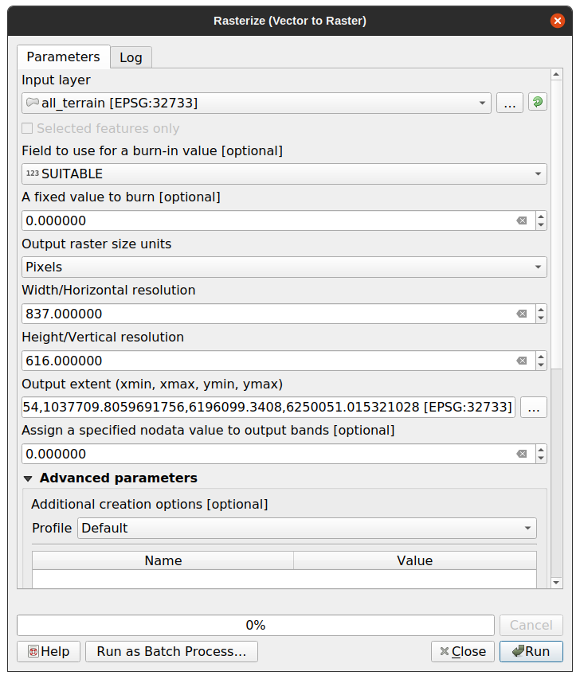

Converting between raster and vector formats allows you to make use of both
raster and vector data when solving a GIS problem, as well as using the various
analysis methods unique to these two forms of geographic data. This increases
the flexibility you have when considering data sources and processing methods
for solving a GIS problem.
To combine a raster and vector analysis, you need to convert the one type of
data to the other. Let’s convert the raster result of the previous lesson to a
vector.
The goal for this lesson: To get the raster result into a vector that can
be used to complete the analysis.
8.1.1. ★★☆ Follow Along: The Raster to Vector Tool
Start with the map from the last module, raster_analysis.qgs. There you
should have the all_conditions_simple.tif calculated during the previous
exercises.
Click on Raster ► Conversion ► Polygonize (Raster to
Vector). The tool dialog will appear.
Set it up like this:
Change the field name (describing the values of the raster) to
suitable.
Save the layer under exercise_data/residential_development
as all_terrain.shp.
Now you have a vector file which contains all the values of the raster, but
the only areas you’re interested in are those that are suitable; i.e., those
polygons where the value of suitable is 1. You can change the
style of this layer if you want to have a clearer visualization of it.
Create a new vector file that contains only the polygons where
suitable has the value of 1.
Save the new file under exercise_data/residential_development/ as
suitable_terrain.shp.
Answer
Open the Query Builder by right-clicking on the
all_terrain layer in the Layers panel, and selecting
the Properties ► Source tab.
Then build the query "suitable"=1.
Click OK to filter out all the polygons where this condition
isn’t met. When viewed over the original raster, the areas should overlap
perfectly:
You can save this layer by right-clicking on the all_terrain
layer in the Layers panel and choosing Save As…,
then continue as per the instructions.
8.1.3. ★★☆ Follow Along: The Vector to Raster Tool
Although unnecessary for our current problem, it’s useful to know about the
opposite conversion from the one performed above. Convert to raster the
suitable_terrain.shp vector file you just created in previous step.
Click on Raster ► Conversion ► Rasterize (Vector to
Raster) to start this tool, then set it up as in the screenshot below:

Input layer is all_terrain.
Field name is suitable.
Output raster size units is Pixels.
Width and Height are 837 and 661,
respectively.
Get the Output extent from the all_terrain layer.
Set output file Rasterized to
exercise_data/residential_development/raster_conversion.tif.
Note
The size of the output image is specified here to be the same as the
original raster which was vectorized. To view the dimensions of an image,
open its metadata (Metadata tab in the Layer
Properties).
Click OK on the dialog to begin the conversion process.
When it is complete, gauge its success by comparing the new raster with the
original one. They should match up exactly, pixel for pixel.
Now that we have the results of the terrain analysis available in vector
format, they can be used to solve the problem of which buildings we should consider
for the residential development.